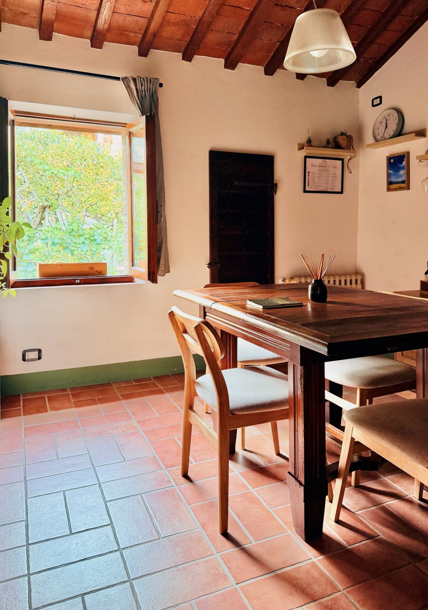
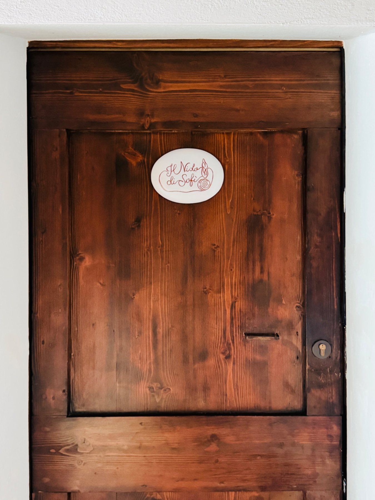

Bravìo delle Botti: dove dormire per viverlo dal centro storico.
Negli ultimi giorni di agosto Montepulciano vive il Bravìo tra contrade, cene, cortei e bandiere. Scegliere Il Nido di Sofì significa avere una casa per due nella parte alta del centro, a pochi passi dai luoghi della festa e dal percorso della tradizione.
 Immagine d'atmosfera del borgo · non ritrae la gara
Immagine d'atmosfera del borgo · non ritrae la garaChe cos'è il Bravìo.
Durante la settimana del Bravìo le contrade storiche diventano il centro della vita serale del borgo.
L'ultima domenica di agosto due spingitori per contrada affrontano le strade in salita del centro spingendo una botte di circa 80 kg fino a Piazza Grande.
Cene, prove, cerimonie e cortei rendono l'intera settimana uno dei periodi più intensi dell'anno a Montepulciano.
Perché dormire nel centro storico.
Durante gli eventi il centro è molto vissuto. Una volta parcheggiata l'auto, poter fare tutto a piedi è particolarmente comodo.
Al Nido puoi vivere anche le serate del Bravìo, rientrare quando vuoi e ritrovare un appartamento indipendente senza dover organizzare spostamenti fuori dal centro.
Il Nido si trova in Via del Poliziano, nella parte alta del centro storico. Durante i giorni della festa i cortei storici animano anche la via dell'appartamento: l'atmosfera del Bravìo è letteralmente sotto casa.
Camera matrimoniale, soggiorno e cucina attrezzata offrono una base tutta vostra per vivere la festa con libertà. L'appartamento affaccia verso il verde, non direttamente sulla via principale.


Vivi il Bravìo partendo da casa.
Al Nido sei già nel cuore storico di Montepulciano, vicino alla festa, con un appartamento tutto per voi. Per l'ultima settimana di agosto consigliamo di richiedere disponibilità con anticipo.
Richiedi disponibilità